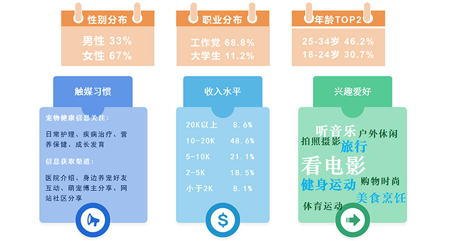
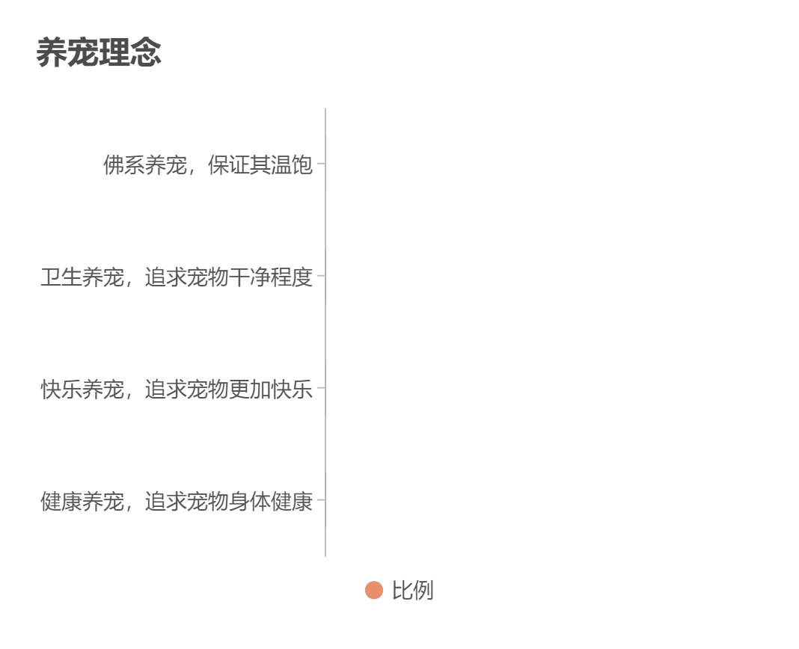
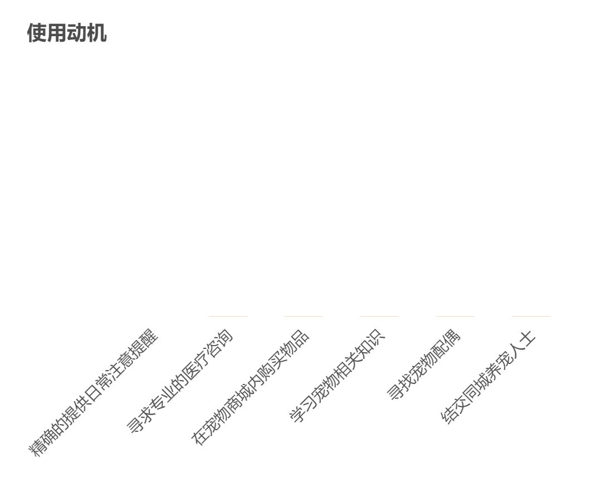

猫窝研发团队采取Alan Cooper在《About Face：交互设计精髓》一书中提到的研究用户的系统化方法，即用户模型（Persona）。猫窝的用户模型基于对团队用户的访谈、观察与统计分析建立，严谨可靠。
FEATURES:
- 对用户的访谈和观察，根据角色对访谈对象分组
猫窝团队采取随机分层抽样的方法，确定了351个观察访谈样本。根据角色不同，我们将受访者分成私人养猫者与猫舍经营者两组
女性消费者占比略多于男性；年龄主要集中在21-30岁；消费者呈现高线级城市、高学历、高收入等特征，家庭结构多为三口之家、无孩小两口、单身女性；近半数人群养宠时间为1-2年；日常养宠对健康护理、疾病治疗、疫苗体检、营养保健关注度较多；宠物医院专业医生以及身边养宠好友之间互动是主要的宠物健康信息获取渠道。

大多数人使用辅助养猫产品主要是为了精确的提供日常注意提醒，比例超过64%；此外，猫咪的健康问题越来越受到重视，有62%的人是为了寻求专业的医疗咨询；56.7%的人是为在商城内购买物品，尤其是商城内的生骨肉饮食。
随着消费理念升级，养猫理念也随之改变，现阶段猫咪健康消费人群养宠时精神和物质两手抓，悦己悦宠。“健康养宠，追求宠物健康成长”是被广泛接受的养宠理念，占比高达32%，位居第一；其次是“讲究卫生，干净养宠”，“快乐养宠，享受过程”。


- 确定行为变量
- 将访谈主体与确定好的行为变量对应，找出重要的行为模型
- 综合各种特征，阐明目标
class 1
少陪伴型养猫-单猫家庭-看重宠物服务-精细微奢养猫-养猫萌新-买猫-为获养猫信息-非技术性养猫
class 2
多陪伴型养猫-多猫家庭-看重价格实惠-经济型养猫-养猫老手卖猫-为方便养猫管理-高知技术型养猫
- 人物模型完整性、无冗余
- 指定人物模型的类型
class 1为主要人物模型，满足广大猫奴轻松、综合、精细养猫的需求；class-2为次要人物模型，满足猫舍部分用户扩大交易，第三方担保的需求。
人物模型


AD1:
AD2:
AD3:
AD4: